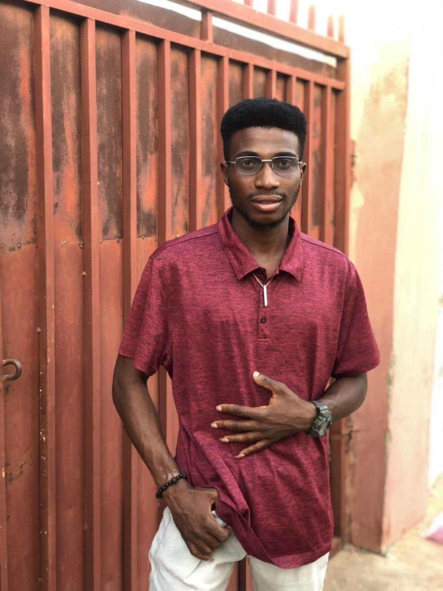
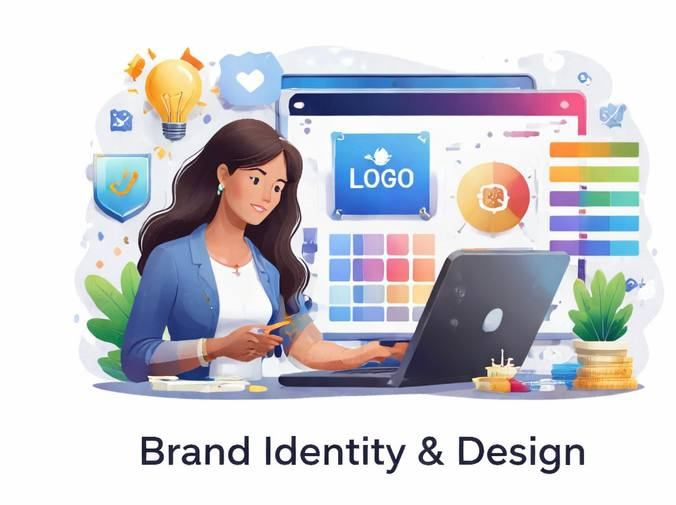
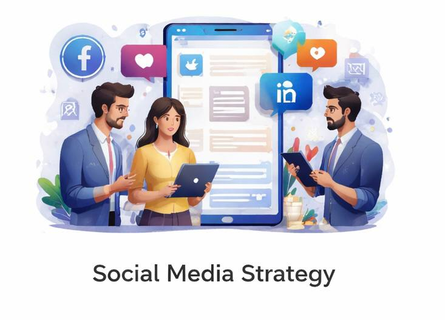
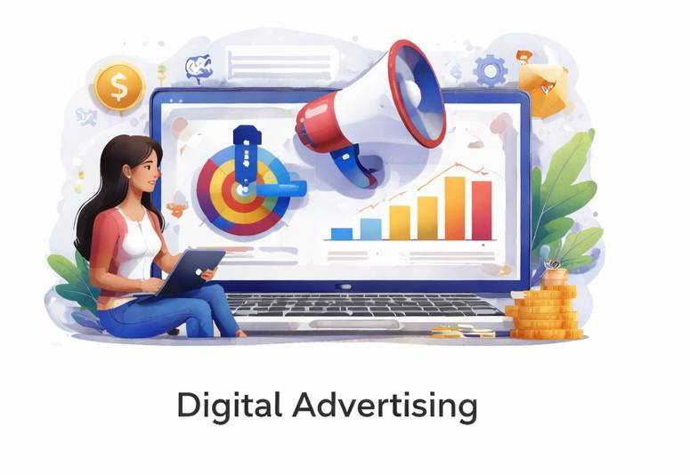

Digital Marketing Coordinator specializing in Meta & Google Ads, paid media strategy, analytics & performance marketing.

I am a Digital Marketing Coordinator with hands-on experience managing Meta and Google Ads campaigns for clothing brands and service businesses. I specialize in building and optimizing paid media campaigns that drive measurable results.
My work includes campaign setup, performance optimization, audience targeting, and reporting using Google Sheets and marketing analytics tools. I currently work with a boutique agency where I manage advertising campaigns, analyze performance data, and prepare client-facing reports.
I also have experience with social media marketing, Pinterest campaigns, and website design. My background in Civil Engineering strengthened my analytical and problem-solving skills, which I now apply to performance marketing and data-driven advertising.
Open to remote roles worldwide.

High-performance Facebook & Instagram campaigns tailored for growth.
Search, Display & Performance Max campaigns for measurable ROI.

Content strategy, engagement growth, and brand positioning.

Responsive, clean, and conversion-optimized business websites.